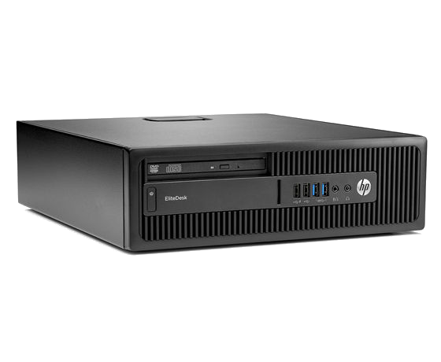
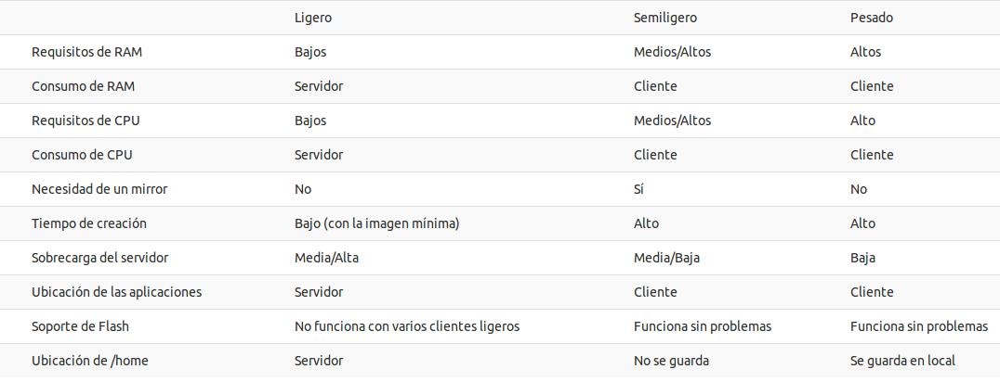

Model de centre
Mou-te pel centre amb el teu usuari.Tipus de clients
Clients lleugers
Els clients lleugers són bàsicament l'equip on es connecten teclat, ratolí i monitor, ja que no executen res.

-
Avantatges
Sense manteniment ja que no té res instal·lat
Administració centralitzada
Menor consum energètic -
Ús recomanat
Aplicacions ofimàtiques, JClic...
Navegar -
Ús no recomanat
Virtualització
Edició de vídeo
Usos que requerisquen molt d'ús de disc o processador
Nota: Les aplicacions s'executen en el SERVIDOR.
Clients semilleugers
Els clientes semilleugers són equips normals sense disc dur.
-
Avantatges
No requereixen manteniment ja que no tenen res instal·lat.
Administració centralitzada
Menor consum energètic -
Ús recomanat
Equips als quals es connecte maquinari específic (PDI)
Equips amb un mínim de 2 Gb de RAM
Entorns on el servidor no tinga molts recursos -
Ús no recomanat
Virtualització
Edició de vídeo
Usos que requerisquen molt d'ús de disc o processador
Nota: Les aplicacions s'executen en el CLIENT.
Clients pesats
Són equips normals amb tots els components.

-
Avantatges
S'aprofiten tots els recursos de maquinari del client.
Cada equip pot tindre el seu propi programari.
Tenen més possibilitats d'ampliar perifèrics. -
Ús recomanat
Equips nous
Equips als quals es connecte maquinari específic (PDI)
Entorns on es vulga virtualitzar, editar vídeo, etc. -
Ús no recomanat
Equips vells o amb pocs recursos
Nota: Les aplicacions s'executen en el CLIENT.
Raspberry-Pi
Són equips barats (40 €), funcionen més o menys com els clients lleugers.

-
Avantatges
Són molt barats.
No requereixen manteniment.
Ocupen molt poc espai. -
Ús recomanat
Ordinadors de consulta (biblioteca, entrada, etc.)
Aules d'informàtica amb ús poc exigent
Si es disposa d'un servidor actualitzat -
Ús no recomanat
El mateix que per als clients lleugers
Nota: No s'ha de confondre amb Arduino o Raspberry-zero.
Taula comparativa
- 
Puc muntar-me jo un model de centre?
Què necessite?
-
Servidors
Un servidor per aula d'informàtica
Un servidor per a la xarxa del centre
Un servidor de fitxers (recomanable) -
Xarxa funcionant correctament
Minimitza els salts entre commutadors (switches)
Equipament de xarxa d'1 Gb/s
Cablejat de categoria 5e o superior -
Coneixements
Cal saber un poc de xarxes.
Saber identificar les targetes de xarxa.
Entendre un esquema de xarxa.